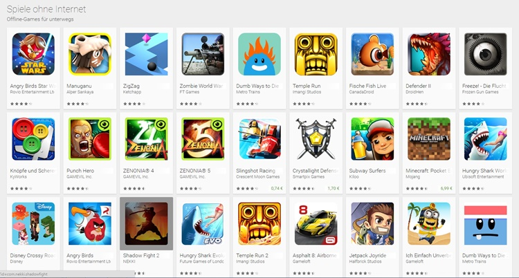

Mobil spielen: Diese Titel sind den Download auf dein Handy oder Tablet auf alle Fälle wert
Wie oft wartet man am Ticketschalter, im Wartezimmer oder in der Supermarktschlange darauf, dass man möglichst schnell an der Reihe ist? Doch durch bloßes In-die-Luft-Starren ziehen sich Wartezeiten gefühlt meist noch mehr in die Länge. Spiele Apps fürs Handy bieten hier einen Ausweg. Lästige Wartezeiten oder auch die täglichen Fahrten in öffentlichen Verkehrsmitteln können mit Mobile Gaming gefühlt deutlich verkürzt werden. Der Vielfalt an Handy Spielen sind mittlerweile kaum mehr Grenzen gesetzt. Ob Actionheld, Sport-Fanatiker, Strategie-Tüftler oder Geschicklichkeitsmeister - für jeden Geschmack gibt es die passenden Smartphone Games.
Handyspiele wie Candy Crush, Pokémon Go oder Angry Birds haben längst Kultstatus inne und befinden sich auf unzähligen Smartphones. Doch die Auswahl an tollen Games ist weitaus größer. Für Abwechslung beim Mobile Gaming sorgen diese zehn coolen Spiele Apps mit Suchtfaktor!
Spielen am Handy wird immer beliebter. Laut der neuen JIM-Studie 2018 zur Mediennutzung von Kindern und Jugendlichen gibt es einen regelrechen Boom von Handyspielen - und das nicht nur bei Jungs. Auch bei Mädchen zwischen 12 und 19 Jahren ist das mit Abstand beliebteste Spielgerät das Handy - und das noch weit vor dem Gebrauch von PC und Spielekonsolen.
Bubble Witch 3 Saga – Das abenteuerliche Smartphone Spiel mit Hexe Stella
Bei diesem Geschicklichkeitsspiel gilt es die Hexe Stella dabei zu unterstützen, die vom bösen Wilbur eingesperrten Eulen und Feen zu befreien. Dies gelingt indem man in sogenannten Blasenschießer-Puzzles so viele bunte Blasen wie möglich zum Platzen bringt - und dadurch den in einigen Blasen gefangenen Eulen zur Freiheit verhilft.
Zusammen mit Stella reist man durch zwanzig abwechslungsreiche Kapitel im Zauberreich und wird dabei zeitweise von weiteren, mit Spezialfähigkeiten ausgestatteten Charakteren unterstützt. Weitere Abwechslung bieten unterschiedliche Zusatzaufgaben. Das Smartphone Game lässt sich sowohl alleine als auch über eine Internetverbindung mit Freunden spielen.
Clash Royale – Fesselnde Strategie-Kämpfe im Multiplayer Game
Lust auf mittelalterliche Schlachten mit strategischen Elementen? Dann ist das Game Clash Royale genau das Richtige! Das Spiel bietet ein echtes eSport Erlebnis auf dem Smartphone. Hier kämpft man über das Internet gegen echte Multiplayer-Gegner um den Sieg. Das Spielprinzip ist simpel und schnell zu erlernen. Stets stehen sich zwei Spieler als Kontrahenten in einer virtuellen Arena mit jeweils drei Burgen auf jeder Seite gegenüber. Ziel ist es, die drei Burgen des Gegners dem Erdboden gleich zu machen oder diesen zumindest möglichst viel Schaden zuzufügen - und dadurch den Sieg zu erringen! Pro Schlacht stehen den Spielern 3 Minuten Zeit zur Verfügung, was das Spiel dynamisch macht.
Die Attacken auf den Gegner werden mithilfe zuvor selbst zusammengestellter Karten-Decks gestartet. Jede Karte steht für eine bestimmte Kampfeinheit: beispielsweise Bogenschützen, Drachen oder Ritter. Wird eine Karte auf dem Schlachtfeld platziert, erscheint umgehend die entsprechende Kampfeinheit und attackiert den Gegner. Dieser hält natürlich mit den eigenen Einheiten dagegen. Hindernisse und Spezialattacken machen jedes Scharmützel noch packender. Für gewonnene Schlachten erhält man Belohnungen, mit denen sich neue Kampfeinheiten und Spezialfähigkeiten freischalten lassen. So bleibt die Motivation nicht auf der Strecke.
Asphalt 9: Legends
Flottes Autorennspiel für Fans von Aracde-Racern mit toller Grafik und Effekten. Im Karrieremodus arbeitet ihr euch immer weiter hoch, indem ihr über 60 Saisons und 800 Events abschließt, um zur wahren Asphalt-Rennen-Legende zu werden. Dazu müsst ihr euch in echten Supersportwagen von namhaften Herstellern wie Porsche, Ferrari, Porsche oder Lamborghini an spektakulären Orten auf der ganzen Welt in anspruchsvollen Rennen gegen eure Kontrahenten durchsetzen. Außerdem könnt ihr in Echtzeit auch im Online-Mehrspielermodus gegen bis zu sieben gegnerische Spieler weltweit antreten. Asphalt 9 bietet mehr als 50 Fahrzeuge, die ihr im Auto-Editor in Sachen Farbe und Ausrüstung und tunen könnt. Grafisch kitzelt das Spiel mit seinen detailgetreuen Autos, cooler HDR-Technik sowie tollen Grafik- und Partikeleffekten alles aus eurem Handy heraus. Das Geschwindigkeitsgefühl ist toll, vor allem, wenn ihr mit vollem Nitro-Boost über die Piste brettert, durch die Luft segelt und dann kurz nach der Landung per Doppeltipp auf die Bremse eine 360-Grad-Drehung ausführt. Die Steuerung ist für einen Arcade-Raser entsprechend simpel; der Hersteller bezeichnet sie als "innovative TouchDrive-Steuerung, die die Lenkung auf der Spur der Straße optimiert, damit ihr euch auf den coolen Arcade-Spaß und schnelle Geschwindigkeit konzentrieren könnt." Na dann... "Gentleman, start your engines!"
Die Sims Mobile
Die bekannte Lebenssimulation gibt es schon länger auch für Handys und Tablets und sie kommt bei den Spielern - trotz möglicher In-App-Käufe für SimCash und Juwelen - offenbar sehr gut an. Im Apple-Store stand sie bei Redaktionsschluss sogar auf Platz 1 der Simulationen. Wie gehabt erstellt ihr einzigartige Sims und Häuser und begleitet sie durch ihr digitales Leben. Die Pixelmenschen gehen arbeiten und erklimmen in teils ungewöhnlichen Berufen wie etwa Modedesigner die Karriereleiter, haben verrückte Hobbys, schmeißen Partys und gehen romantische Beziehungen ein, die bis zur Familiengründung führen. Jeder Sim hat verschiedene Persönlichkeitsmerkmale wie "aktiv" oder "musikalisch" und erhält weitere dazu, wenn er mit der Zeit an Lebenserfahrung gewinnt. Außerdem nehmt ihr an speziellen Tagesereignissen wie der Singlebörse im Park oder dem Musikfest am Marktplatz teil, trefft die Sims anderer Spieler bei Partys oder in der Stadt und sagt ihnen dann mittels Stickern, dass ihr sie süß, heiß oder fabelhaft findet. Die Lebenssimulation, die auf Mobilgeräten mit toller Grafik und kurzen Ladezeiten glänzt, macht jede Menge Laune. Es gibt immer etwas zu tun und es wird nie langweilig. Durch In-Game-Käufe beschleunigt ihr Dinge oder nehmt optische Veränderungen, wie etwa die Farbe von Gegenständen vor.
Subway Surfers – Actionreiches Handyspiel mit Surf-Erlebnis
Im Meer surfen ist ja weithin bekannt. Beim Game Subway Surfer taucht man allerdings in den großstädtischen Untergrund und schlüpft in die Rolle eines U-Bahn-Surfers. Auf einem stylischen Surfbrett düst der Spieler mit waghalsigem Tempo die U-Bahn-Gleise entlang und versucht sich an akrobatischen Tricks. Zugleich gilt es reaktionsschnell entgegenkommenden Zügen auszuweichen und vor dem fiesen Bahninspektor und seinem Wachhund auf der Hut zu sein. Wird man von einem der Beiden ertappt, findet man sich schnell in einer rasanten Verfolgungsjagd wieder.
Besonders hübsch ist die 3D Grafik, wodurch die bunten Stadtkulissen einen extrem lebendigen Eindruck machen. Durch das Einsammeln von Münzen auf den Surfstrecken kann man außerdem unterschiedliche Zusatz-Items erwerben.